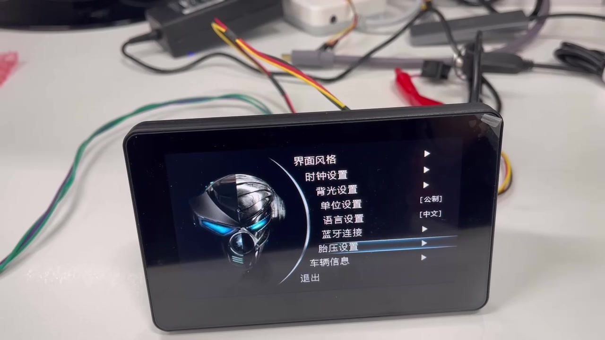

01
Glanceable information
Prioritize speed, status, warnings and essential controls around short viewing time.
Two-wheeler and light-EV HMIs must balance glanceable information, startup behavior, graphics, vehicle interfaces and connectivity within a compact embedded system.
Use these questions to narrow the HMI workload, then compare compute, display, GUI and engineering paths.
Prioritize speed, status, warnings and essential controls around short viewing time.
Define how quickly useful vehicle information must appear after power-on.
Map CAN, serial, sensors and connectivity needs before selecting the compute platform.
Separate simple gauges from richer animation, maps, media or connected features.
A focused serial or MCU interface, a richer RTOS HMI and an application-class Linux system solve different problems. The HMI Selector uses the rest of your brief to narrow the starting point.
For focused control and status interfaces where integration effort, startup and cost matter strongly.
For richer graphics, more pages and broader I/O while retaining an embedded real-time product model.
For complex workflows, larger software stacks, networking, media or application-style functionality.

The existing 5-inch 2W cluster demo provides a concrete reference for gauges, status pages and settings on an embedded HMI platform.
Use the selector for an initial architecture direction, or share the project constraints for a more specific discussion.